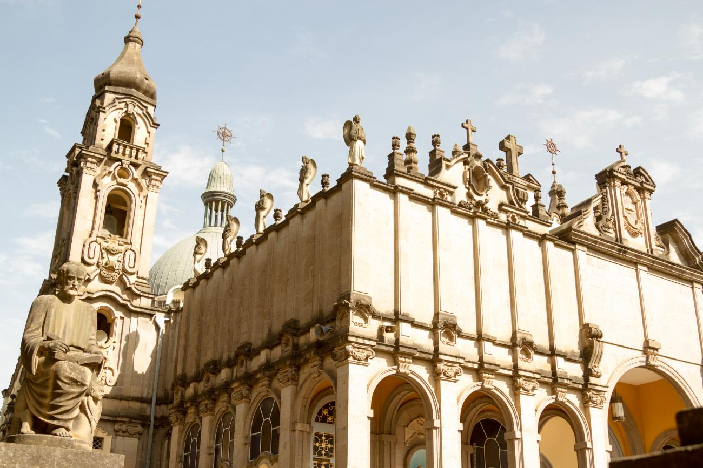
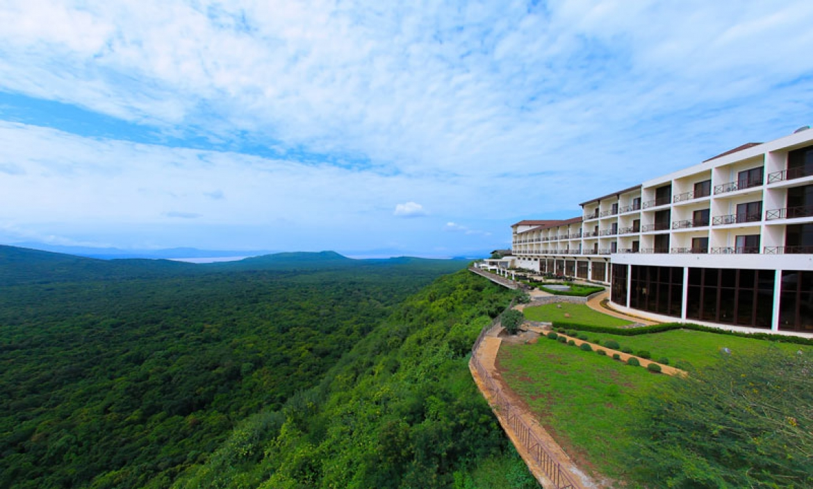
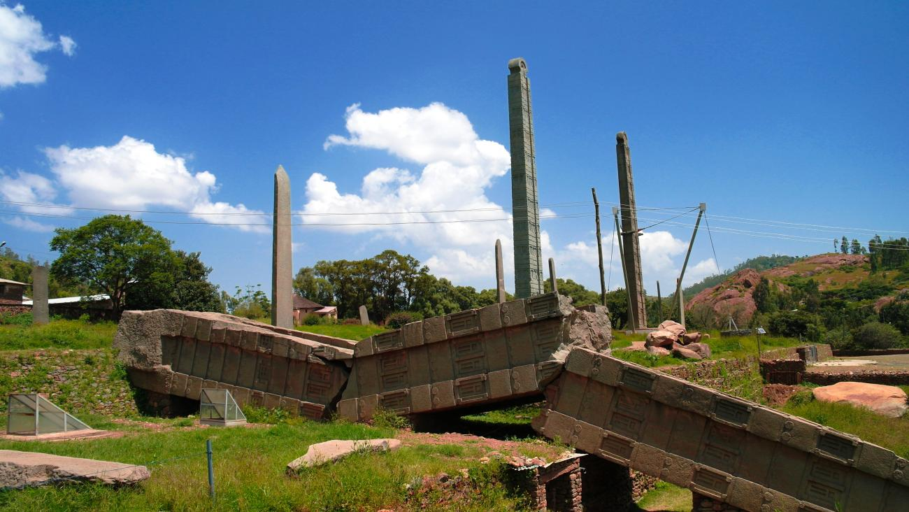
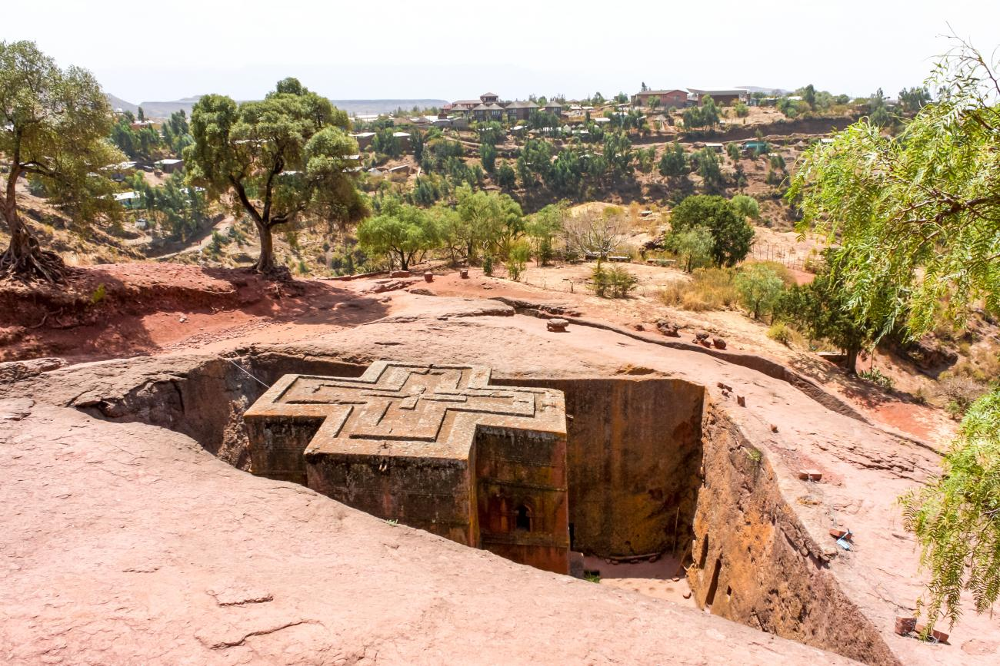
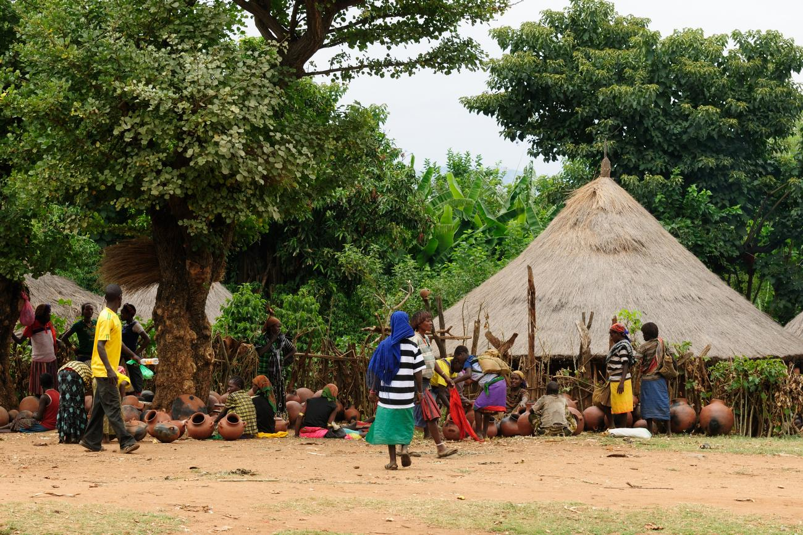
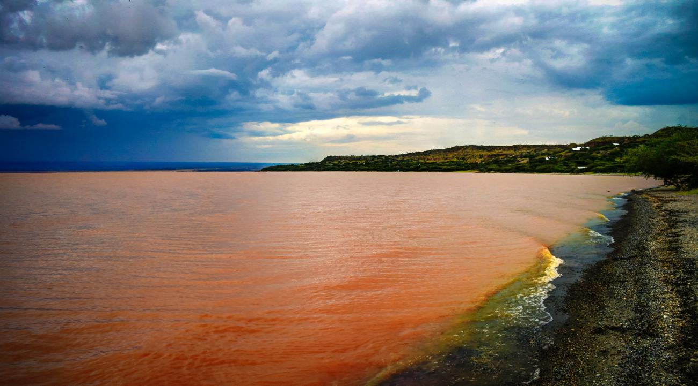
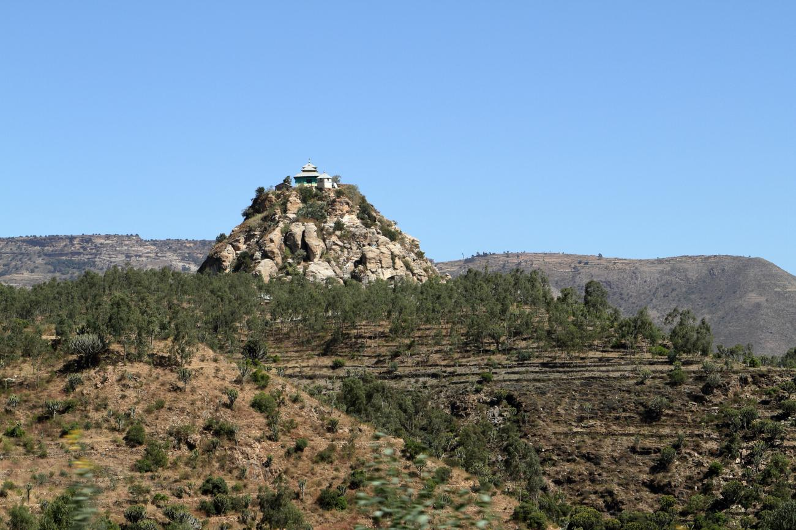

With the most UNESCO World Heritage Sites than any other African country
(including Egypt), Ethiopia is a hidden gem that is overlooked by many
travellers.
In this section, we will tell you the most famous tourist attractions in
Ethiopia. Even though there is a lot of places that you can visit here,
we have pulled together what we think are the best places to visit in
Ethiopia. So, let us jump into it.

Addis Ababa
Ethiopia's capital is located more or less in the dead centre of the
country and is the world's third-highest capital at 2,400 m. Its name
means 'New Flower' and it is a relatively modern city, founded in 1887
by Emperor Menelik II. In just over a century it has grown from
nothing into a modern metropolis of several million people. Its
altitude lends it a comfortable climate and throughout the year the
weather is temperate with just the occasional downpour.
Transcript
Addis Ababa the diplomatic capital of Africa is home to the
African Union and United Nations Economic Commission for Africa
Addis offers a wide range of international standard hotels and
Conference values as well as world-class tourist facilities it is
a cosmopolitan modestly and steeped in ancient culture where you
can jump from traditional to modern Ethiopia in one night whether
you're in Addis for a conference or in business make the
pilgrimage to the National Museum to see Lucy our oldest ancestor
and discover the sights for yourself set below the in total Hills
Matis is a great base from which to visit Ethiopia's ancient
civilizations and enjoy a beautiful landscapes come to Addis work
discover breathe.
Arba Minch
With stunning views in all directions, the town of Arba Minch is
situated in a truly spectacular location. It lies at an elevation
of 1,300m in the foothills of the Rift Valley and mountains rise
up to almost 4,000m to the west. The town comprises 2 separate
settlements, Sikela and Shecha that are 4 km apart and connected
by a sealed road, so although the total population is around the
75,000 marks it still retains a small-town atmosphere.

Awash National Park
This scenic national park is situated in the dry acacia savanna of the
Rift Valley some 200km from Addis Ababa. A magnificent 150m-deep
gorge, carved by the Awash River, forms the southern boundary of the
park, including a substantial waterfall. To the north, you'll see the
ragged edges of Mount Fantelle, a dormant volcano whose crater towers
above the surrounding bush. Other highlights include the Filwoha Hot
Springs, which feed a series of beautiful translucent blue pools and
Lake Beseka.
Axum
This fascinating town was the centre of the Axumite Empire, one of the
most important and technologically advanced civilisations of its time
and a major force in world trade between the 1st and 7th centuries
AD.
A further twist in the town's long history is speculation that it
could have held the court of the Queen of Sheba and also that it is
the final resting place of the Ark of the Covenant. Whatever the truth
of these matters it is undoubtedly the holiest city of the Ethiopian
Orthodox church and there is a startling wealth of antiquities both to
be seen and as yet still undiscovered.


Lalibela
The isolated town of Lalibela, situated high up in the Lasta
Mountains, is famous throughout the world for its incredible rock-hewn
churches. At 2,630 m and perched among wild mountains, the setting is
fantastic.
From the 10th to the mid-13th century it was the capital of the Zagwe
Dynasty that ruled the country and it was under the direction of its
most famous King, Lalibela, that the churches were carved. He gathered
together the greatest craftsmen possible and some estimates think as
many as 40,000 people were required to create the churches.
Jinka
Although Jinka is the administrative capital of the South Omo zone it
exists in almost isolation from the rest of the country and has a
relaxed, rural feel. Set at an altitude of 1490m it is quite temperate
and its Saturday market attracts traders from all over the area.


Langano
Of all the Rift Valley lakes, Lake Langano is the most developed for
tourism, lying adjacent to the Abiata-Shals National Park that is
dominated by the two lakes for which it is named. Lake Langano is 18
km long and 16 km wide and its soft brown waters are set against the
blue backdrop of the Arsi Mountains, which soar to 4000 m. Although
the area around the lake is largely deforested, a variety of wildlife
live here including hippos, monkeys, baboons, warthogs, and a huge
variety of birds.
Bahir Dar
Bahir Dar, with its wide avenues of palms and scenic lakeside
location, is one of Ethiopia's most attractive towns. Located on the
southern shore of Lake Tana, it is an ideal base from which to explore
the lake and surrounding area, which includes the blue nile falls.
Bale Mountains National Park
The Bale Mountains National Park is a protected area of approximately
2,200 km2 and is located around 400 km southeast of Addis Ababa. Its
high mountains, sweeping valleys, dramatic escarpment and wide
expanses of forests provide visitors with a diversity of vistas unique
to the Ethiopian highlands.
Simien Mountains
Climbing to an altitude of 4,620m, stretching 100 miles east to west,
the Simien Mountains are one of the largest ranges in Africa. With
their vaulting granite columns, towering escarpments and plummeting
valleys, they are also among the most spectacular.

Mekele
Founded by Emperor Yohannes IV in 1881, Mekele is the main and most
modern city in the Northern region of Ethiopia and tourism
infrastructure is better than in other parts of the country. Set in a
basin at 2,200m in the rocky Tigraian Highlands, the city is clean,
organised and vibrant. There are many excellent restaurants and it
makes a good base from which to explore the surrounding area.